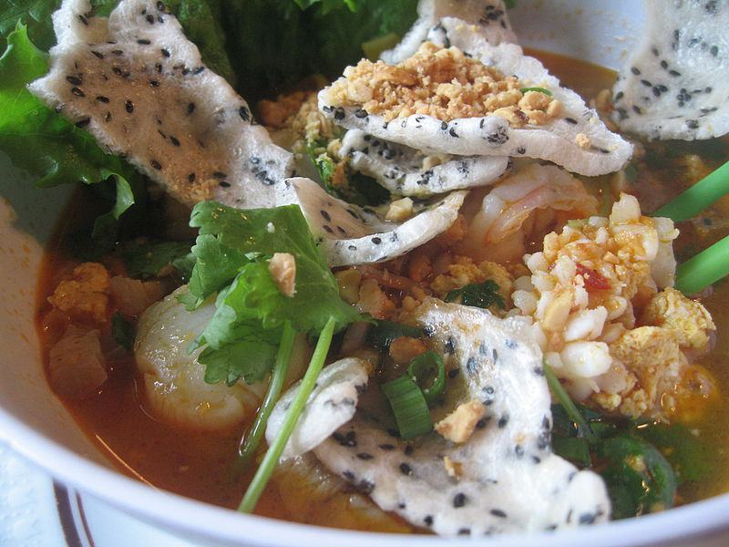

Cùng bắt tay làm thử thôi nào!
Vật Liệu:
- Nước hầm rau cải(Bắp tươi, củ cải trắng, carrot, một
trái táo đỏ ngọt, butter squash, tất cả cắt khúc, cộng với cabbage, hành tây,
đổ nước vào nồi pressurẹ Nêm tí muối, tí bột nêm chay,một viên đường phèn nhỏ,
bắt lên bếp hầm khoảng nửa tiếng, nhấc xuống bếp, lọc lấy nước, đổ thêm vào
nồi nước lọc 1 lon vegetable broth, bắt lên bếp nấu sôi, có loại nước tương mushroom
flavor dùng để nêm nước lèo chay là ngon nhất, mà nước lèo hổng bị đen đó nhen).
- Mì quảng(Có thể dùng phở cọng bự như bánh tráng xắt miếng, ngâm nước cho thêm
tí
nghệ vàng hoặc màu vàng cũng được)
- Đậu xanh không vỏ
- 1/3 trái thơm tươi(Thơm tươi thì ngon hơn, nếu hổng có thời giờ thì có thể
dùng
thơm
hộp, nhưng chắc hổng ngon bằng), gọt vỏ, bỏ vô máy sinh tố say nhuyễn vắt lấy
nước.
- Nấm mèo nguyên tai, lựa nấm thật bự, ngâm nước cho mềm, rửa sạch, vớt ra để
ráọ
- Bắp trái tươi bào sẵn.
- Mì căn
- Ham chay("Chicken" flavor thơm ngon hơn), hổng có cũng được .
- Nấm búp tươi(Ở VN dùng nấm rơm tươi là tuyệt cú mèo)
- Bánh tráng mè nướng vàng
- Rau thơm đủ loại, giá sống, rau muống chẻ, bắp chuối bào, ngò.
- Leek: Phần xanh xắt nhỏ(Chia làm 2 phần) để ướp, phần trắng bầm nhỏ, chia làm
2
phần để phi cho thơm
- Chanh, ớt tươi, bột năng, nước dừa tươị
- Đậu phụng rang vàng
- Dầu Olive
- Hột điều màu
Cách Làm:
Chuẩn bị:
- Nấm búp tươii/nấm rơm tươi ngâm tí muối, rửa sạch lại bằng nước lạnh để ráọ
- Đậu xanh hấp chín, để vào cối quết nhuyễn chung với bắp tươi bào sẵn.
Cho 1 phần leek xanh xắt nhỏ vào, nêm tí muối, đường, bột ngọt, tiêu cho vừa ăn,
thêm
vào hai giọt màu đỏ, hai muỗng bột năng, quết cho thật kỹ, thật đềụ
- Ham chay xắt miếng mỏng. Bắt chảo lên bếp, cho vào hai muỗng dầu Olive,
bỏ
phần trắng leek và ham chay vào đảo sơ qua cho vàng vàng, múc ra dĩa để nguộị
- Mì căn xâm cho nhừ(Để cho mau thấm gia vị), ướp phần leek xanh còn lại với tí
muối,
đường, bột ngọt, tiêu, để khoảng 1/2 tiếng cho thấm
- Rau sống đủ loại, bắp chuối bào, rau muống chẻ, rửa sạch để ráọ
- Đậu phụng rang vàng giã vừa phải(Đừng nát mất ngon)
Cách làm
- Lấy từng nấm mèo lau cho thật khô, dùng muỗng cà phê múc hỗn hợp bắp đậu xanh
quệt dày nấm mèo cho hơi u lên chính giữa cho đẹp. Bắt xửng lót lá chuối, xếp nấm mèo vào,
hấp
cho chín, lấy ra để nguộị
- Bắt chảo lên bếp, cho 2 muỗng dầu Olive, đợi dầu nóng cho mì căn vào xào cho
vàng vàng,
đổ vào chảo nửa chén nước dừa tươi, rim cho cạn nước là được, vớt ra để nguội, xắt lát mỏng,
để
chung vào dĩa ham chaỵ
- Đổ nước thơm vắt vào nồi nước lèo, nấu cho sôi, thả nấm tươi vào, nêm nếm vừa
ăn
(Nêm
nước lèo nhớ dùng đường phèn thay cho đường cát trắng, nước lèo sẽ ngọt thanh
hơn)
- Bắt chảo lên bếp, cho tí dầu vào, đợi nóng bỏ hột điều màu vào, vừa thấy hột
điều màu
lăn
tăn là tắt lửa bắt xuống liền, đừng để cháy, vớt bỏ hột
- Bắt chảo dầu khác lên bếp, đợi nóng cho phần leek trắng bầm còn lại, phi cho
vàng thơm,
đổ
vào chảo hôt. điều màụ
- Vậy là xong! Mì quảng trụng sơ nước sôi cho vào tô, xếp chả nấm mèo, mì căn,
ham chay, múc nước lèo sâm sấp tô, rưới tí đậu phụng rang giã và tí nước màu hột điều lên trên,
rắc
tiêu, ăn kèm với các thứ rau trên và bánh tráng mè nướng dòn bóp vụn. Ui chu
choa
Chúc nấu thành công dzà ăn ngon miệng nhen!!!